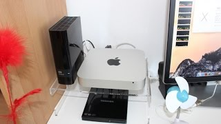
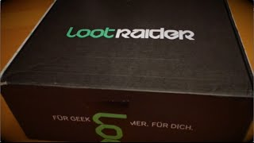
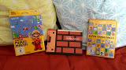
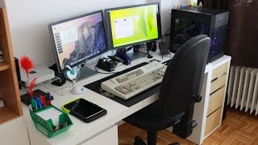

Home
Mehr von mir
In eigener Sache
|
- 27.10.2015
-
3. Teil meines Mac Mini (Late 2012) SSD-Upgrades Projekts [Initialisierung der SSD, Speedcheck]

-
Mac Mini SSD Upgrade - Teil 03
- 19.10.2015
-
2. Teil meines Mac Mini (Late 2012) SSD-Upgrades Projekts [Unboxing der Produkte]
-
Mac Mini SSD Upgrade - Teil 02
- 13.10.2015
-
1. Teil meines Mac Mini (Late 2012) SSD-Upgrades Projekts [Vorstellung der Produkte]
-
Mac Mini SSD Upgrade - Teil 01
- 06.10.2015
-
Wieder ein LootRaider Unboxing Video. :)

-
LootRaider September 2015 - Unboxing
- 19.09.2015
-
Endlich ist es da, Super Mario Maker, wahoo!! :D

-
Super Mario Maker - Unboxing
- 16.09.2015
-
30 Sekunden Video meines Schreibtisch-Setups für das Projekt "Setup Tour MegaMix 2015" von Valentin Möller und Felixba

-
Setup Tour MegaMix 2015 - Mein Beitrag
- 31.08.2015
-
Hallihallo,
auch diesen Monat gibt es wieder ein Unboxing Video zur aktuellen LootRaider Box.
Viel Spaß dabei!
MfG, BigFaischty
-
LootRaider August 2015 - Unboxing
- 04.08.2015
-
Hallihallo,
das hier ist mein 1. YouTube Video :-)
Erwartet also bitte nicht gleich ein Meisterwerk.
In diesem Sinne viel Spaß mit dem Video.
MfG, BigFaischty
-
LootRaider Juli 2015 - Unboxing
|